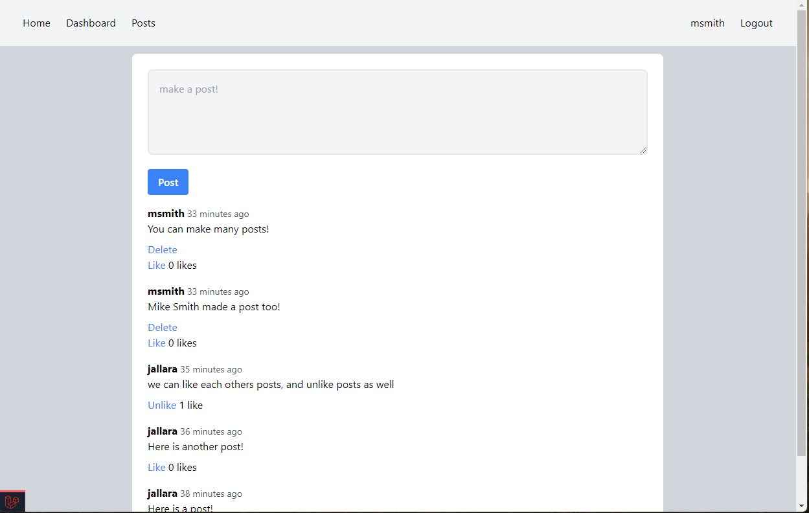

Movie Blog!
This is an ongoing project for users to create and account and make posts about movies and shows they had seen and write reviews and give a rating.
On the homepage here you can see 2 description boxes explaining the current build of the website and what projects are currently being worked on.
In this project I made a website for users to login to there accounts and make posts about a topic of their choice as well as comment and like others posts!
Additionally users were able to update and delete their own posts from a user dashboard that displayed all of their posts.